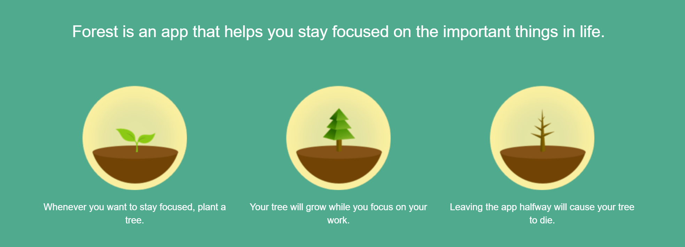
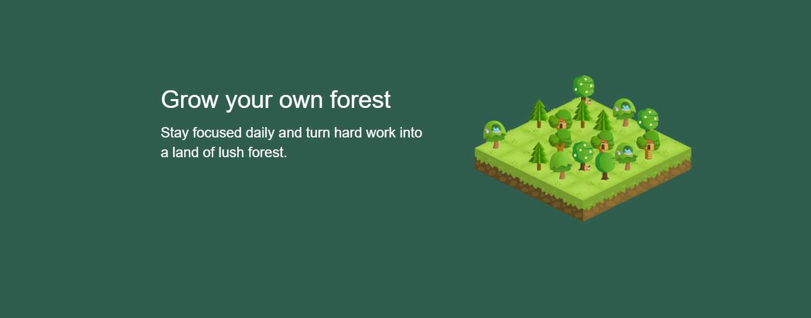
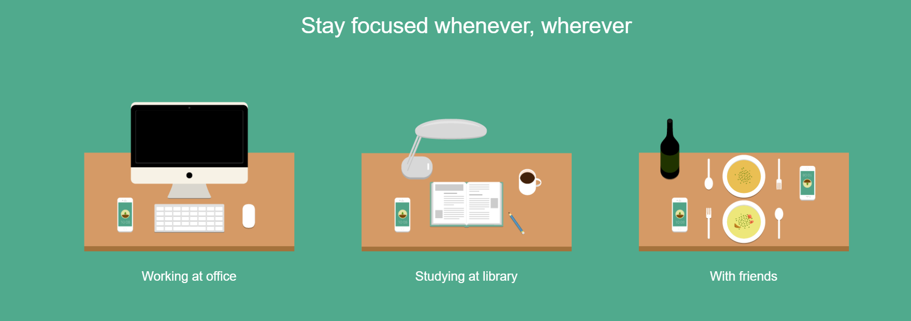
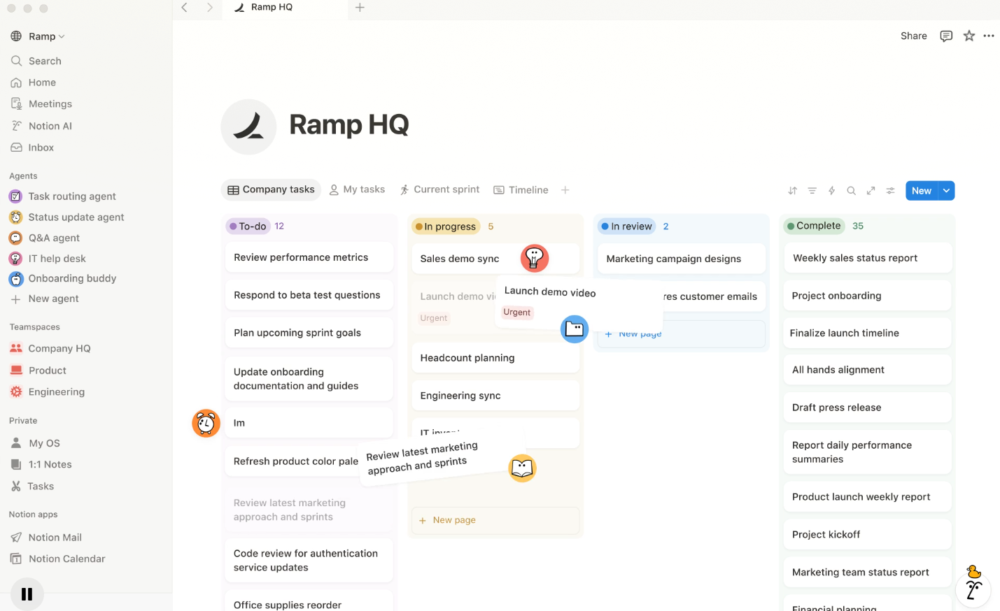
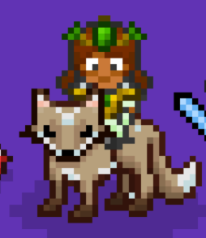

Focus timer based on Pomodoro technique with gamified tree-growing system to encourage productivity.

Figure 1.1: Forest Initial Timer Interface

Figure 1.2: Forest Tree Growing Progress

Figure 1.3: Forest Focus Statistics View
| Strengths | Weaknesses |
|---|---|
| Simple and intuitive interface; Strong motivation through gamification. | Focuses only on time management; No personalized recommendations. |
Highly flexible workspace for organizing complex workflows and academic task management.

Figure 1.4: Notion Project Management Dashboard
Habit tracking with RPG-style gamification, including daily tasks and rewards system.

Figure 1.5: Habitica Character and Task Progression
Our project aims to address market gaps by developing a decision-based simulation system that evaluates multiple factors: